DAVID G. SIMPSON
Personal Web Site
| Home |
| Blog |
| Personal |
| Professional |
| Software |
| Photos |
| Reference |
| Nanopedia |
| Wiki |
| Contact Me |
| NASA Site |
| PGCC Site |
| SCHS Site |
| Esperanto |
| Moon Rocks |
| S-M Comics |
| Mouse Site |
| Art Gallery |
| S.C. Home |
| Page 1 |
SOUTH CHARLESTON PHOTO ALBUM: PAGE 1
| 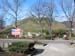 The Mound. This is a 2000-year-old Adena Indian burial mound, and a town landmark. This is the view as seen from D Street. |
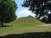 Another view of the Mound. |
|
| 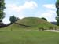 Another view of the Mound. There is a staircase built into the side of the Mound, so that visitors can walk up to the top. |
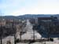 D Street and downtown, as seen from the top of the Mound. |
|
| 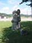 A sculpture near the base of the Mound: Burial Attendants by Cubert Smith, 1979. |
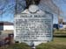 A sign near the base of the Mound, telling some of its history. (High-resolution version) |
|
| 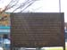 Another sign near the base of the Mound. (High-resolution version) |
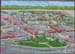 A mural on the side of the G.C. Murphy building, depicting South Charleston as it was in the 1960s. (High-resolution version) |
|
| 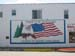 A patriotic sign on the side of a building in downtown South Charleston. |
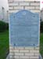 The half-century time capsule at city hall. This was placed here in 1976 during the Bicentennial, and will be opened on July 4, 2026, on the nation's 250th birthday. Ritchie Robb is still the mayor of South Charleston. (High-resolution version) |
|
| 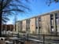 South Charleston High School, my alma mater. |
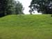 The Wilson Mound, a smaller and lesser-known Adena burial mound in South Charleston. This one has a few modern-day gravesites. |
{kind=link}
{kind=link}
{kind=link}
{kind=link}
{kind=link}
{kind=link}
{kind=link}
{kind=link}
{kind=link}
{kind=link}
{kind=link}
{kind=link}
{kind=link}
{kind=link}
{kind=link}
{kind=link}
| Page 1 of 1 |
|---|
Contact Information
I may be contacted at: